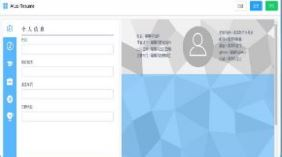
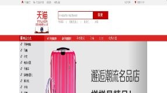
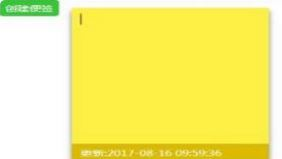
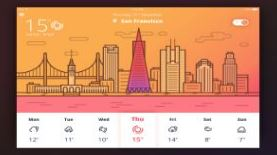

黄燕虹
应聘岗位：前端工程师
184620541@qq.com
18826488752
点击查看我的在线简历
我的作品
使用Vue-cli脚手架搭建开发环境，单文件组件方式实现模块间的数据传递
使用scss编写CSS，使用基于Vue2.0的element组件库

在线简历生成器（Vue.js）
在线应用，使用React框架实现前端组件和数据传输交互，使用Webpack打包构建，LeanCloud存储数据
在线待办事项应用（React）
移动端页面:使用HTML5的Canvas+CSS3绘制图表；
微博使用统计报告
实现扁平式页面效果，从新浪新闻图片接口获取图片地址，实现图片瀑布流懒加载的功能
使用Gulp工具，实现前端工作流自动化全过程
扁平式网站页面（glup）
实现天猫购物网站完整的购物流程的全部页面
使用JQuery实现必要功能的交互，使用Postcss,工具打包，减少资源请求，加快网页加载速度

天猫商城购物网站
使用AJAX技术从微信天气预报接口获取JSON数据，进行转换解析
实现用户所在城市的定位、显示当天当地以及未来一周的天气预报
天气预报小程序
实现便签的外观样式、无限次创建便签、删除便签、移动置顶便签
使用原生JavaScript的原型链实现组件化，进行封装

便签小程序
使用Vue-cli脚手架搭建开发环境，单文件组件方式实现模块间的数据传递
使用scss编写CSS，使用基于Vue2.0的element组件库

项目标题
我的博客
正则表达式--零碎点汇总篇
学正则的时候，比较头疼。知识点很零碎又多，容易忘记，而且潜藏的差距细节点，当下通过测试知道了
但不汇总记录的话，后面回过头看，很容易忽略。所以写这篇博文，一次汇总记录正则表达式的一些常见用法和我觉得需要记住的点...
2017-06-01
跨域方式知多少
好记性不如烂笔头，所以学完跨域之后，我还是老实结合demo来整理一篇跨域实现方式的详记。
现实场景中，肯定有很多时候是需要跨域请求、传输数据的。这些合理的用途会被浏览器默认阻止。那么重点来了，为什么浏览器会默认阻止跨域操作呢...
2017-06-21
栗子最实在：用实例来说明this的含义
this在不同的使用情景中，含义多变，看着看着就可能蒙圈。后面发现通过实例的方式来学习this，通过审查元素直接查看this指向的结果，对this会清晰很多。
总的而言，this指向全局对象window的情况有：全局直接调用this、在函数中调用this...
2017-06-27
前端模块化的规范
前言:现在学习到webpack，然后重新回过头来回顾前端模块化一路发展过程定义的规范，遂写下这篇文...
2017-07-20
ES6学习系列（1）：先来记住这些常用要点
七月中旬，集中时间学习使用React框架的时候，接触到了很多ES6的语法。一开始看的时候，简直一脸蒙蔽
后面对看不懂的代码在google之后知道基本都是ES6的语法的使用,对ES6学习后对常见用法进行整理...
2017-08-06
CSS系列篇：零碎、细节点整理（一）
这个CSS系列，是我从七月开始陆续整理的系列篇。存放在草稿箱里很久了，
把这几篇系列篇都整理下排版，然后发布出来。为什么要写这个系列，初衷也是因为有很多细节点是需要从源头上去理解的。像是很多属性设置...
2017-08-08